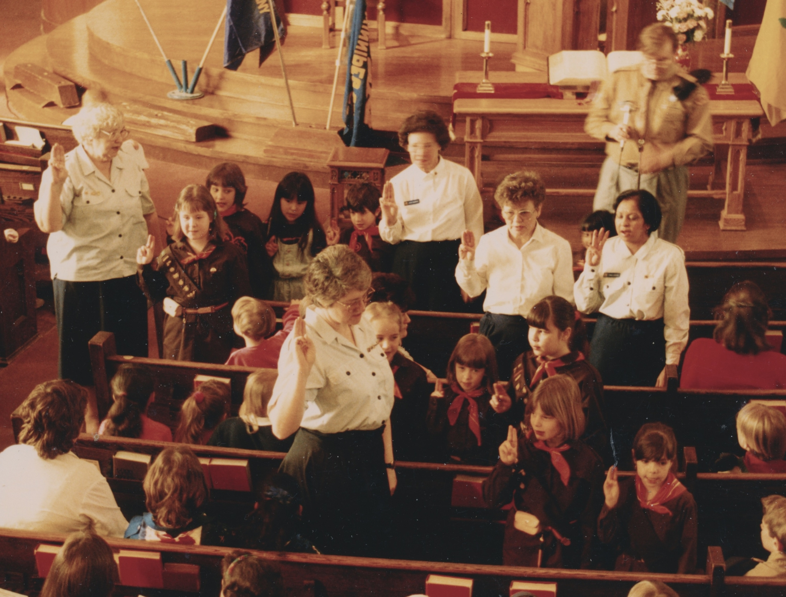

-1-MasterItem.svg)
Stories of Westminster United Church & its People / Page
235
Table
of Contents
Many Things
The interesting point about this shift was that Churches like
Westminster embraced the secular alternatives, made room for
them in their building, held Sunday Worship Service “Parades”
and, in a general sense, imbued them with a Christian veneer.
In the video interview with Mary in this article she sees Guides
and Brownies as more than just an activity program. The same
could be said of our Scouting and Cub programs under the
leadership of Bill Taylor and Jim Palmquist.
But now we have no “parades” during church services, “Church”
has no place in their activities and our only “connect” with these
groups is providing building space for their weekly meetings. Like
our general society today secularization has become the norm
in youth activities as it is in the activities of adults.
We decided to do a video interview with Mary Yanke with
these thoughts in mind. She is one of our very senior, long-serving
members of the congregation and a delightful human being. Her
service, as a volunteer, to young people in the congregation, and
in the community at large, was both completly self-giving and
exemplary as a member of a Christian community. Our thanks to
Nathan Poole who photographed the interview with Mary Yanke
and to Curt Hull who adapted the video for internet access. Thanks
to Jim Palmquist who supplied us with the still pictures. Thank you Mary, Jim
and Bill for your years
of reaching out to the youth of this community. Reaching way back thanks to Mrs. Freeman
and people like Dorothy Dick who cared about our CGIT.
And thanks to the many other people who have been involved in these programs,
whose names I don’t have, but whose labour was so evident.
Above: Mary Yanke & Jim Palmquist, and a Guides Ceremony

